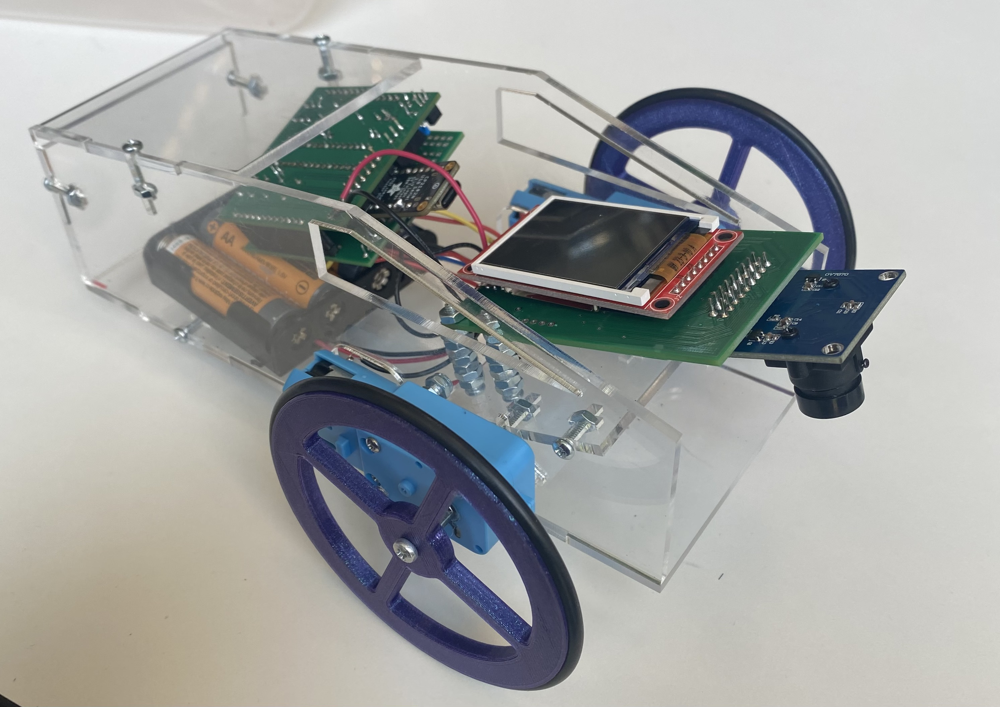

Line Following Robot
Class project at Northwestern

Advanced Mechatronics
The goal of this project was to create a line following robot using a camera to read the line and inform the position and next movements of the robot. As seen to the left, I designed an acryllic housing for my components that was loosely based on the Tesla Cybertruck.
Integrating C and Python
There were two parts to this project. First I had to get the camera to read pixel data with a PIC32 microcontroller. That data then had to be sent it to a Raspberry Pi Pico that would then inform the motor controls based on the camera data.
A Multifaceted Project
This project required a number of skills in order to have the robot follow a line properly. In this project I displayed the ability to:
- Optimize code in C to run at a high speed - to read the image from the camera and send it to an LCD and the Raspberry Pi
- Create an image processing protocol - to determine where the line is and were the robot needs to go
- Communicate between microcontrollers using i2c
- Design of printed circuitboards - I created my own PCB for this project to hold the PIC32 and solder with the other components
- Control a robot using DC motors and PWM
- CAD and design for proper fits considering the manufacturing method: laser cutting
Debugging and More Debugging
Check out a video of the robot in action! As seen in the video, the course was rainbow-colored (based on Rainbow Road from MarioKart), which made it difficult to hard-code in a fixed pixel value to operate off of. I chose to implement a mean-value calculation to find the center of the line.